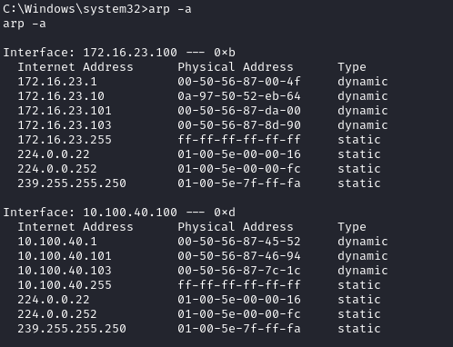

windows
If we are using Windows or we have compromised an host with Windows, we can do an ARP scan with
arp -a

arp scanner
https://github.com/QbsuranAlang/arp-scan-windows-/raw/master/arp-scan/Release(x86)/arp-scan.exe